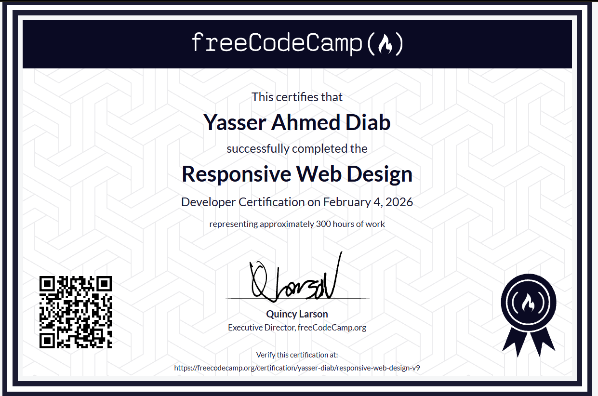
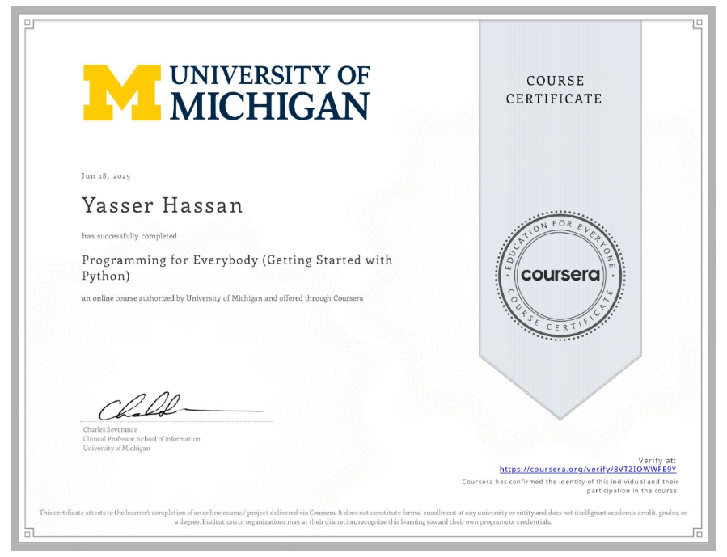
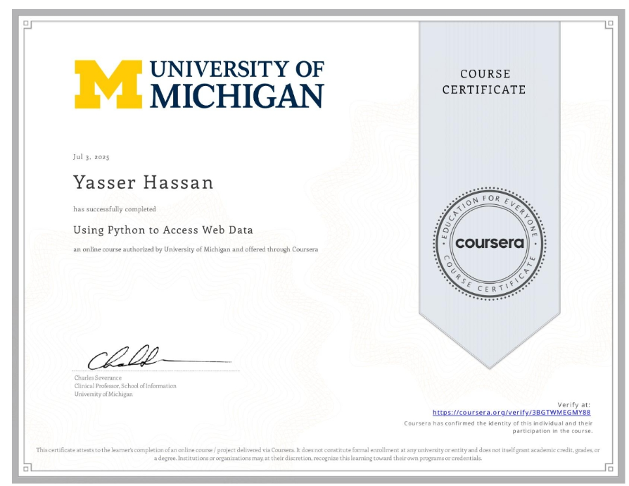

2026 Snapshot
From structured practice to real frontend delivery
This page no longer represents only my early learning steps. It now reflects a stronger stage: completed certifications, published practice projects, and a real client landing page shipped for HGAD.
Right now, I am building on that foundation by sharpening JavaScript, improving UI polish, and making each new project feel more professional, more reliable, and more intentional than the last one.
Current Progress
What I am working on now
JavaScript depth
I am spending more time on DOM work, events, async thinking, cleaner logic, and the kind of interactions that make a page feel alive without becoming messy.
UI polish
My goal is not just to make pages responsive. I want them to feel balanced, clear, accessible, and visually confident across mobile and desktop.
Real-world readiness
After shipping a client landing page, I am focusing more on structure, clarity, maintainability, and presentation so my work feels closer to professional delivery.
Skill Set
Core strengths and active growth areas
Semantic HTML
Advanced
Comfortable with semantic structure, accessible markup, clean hierarchy, and layouts that are easier to scale and maintain.
Responsive CSS
Advanced
Strong hands-on practice with Flexbox, Grid, spacing systems, visual hierarchy, transitions, and responsive layout decisions that hold up across screen sizes.
JavaScript
Actively improving
Growing through DOM manipulation, events, UI behavior, asynchronous patterns, and cleaner problem-solving in more realistic frontend scenarios.
Form and API Integration
Applied in project work
Used EmailJS and API-connected form handling in a real client landing page, turning a static interface into a working communication flow.
Python Foundations
Certified
Built a solid programming base through Python coursework, especially around logic, data structures, and working with web data.
Frontend Delivery
Growing with each build
I am moving from practice-driven pages to more confident portfolio pieces, with better project framing, cleaner code, and stronger user-facing presentation.
Certificates
Structured learning that supports the work
Responsive Web Design
A strong foundation in semantic HTML, accessibility, layout systems, and the responsive thinking that now shapes my frontend work.

Programming for Everybody
Strengthened programming fundamentals through Python syntax, logic, variables, control flow, and beginner-friendly problem solving.

Python Data Structures
Improved confidence working with lists, dictionaries, strings, loops, and the kind of data handling that supports stronger programming habits.
Using Python to Access Web Data
Added experience with retrieving, parsing, and working with web data, which reinforced how frontend and programming concepts connect in practice.

Learning Journey
The path so far
Started with Python fundamentals
Began learning programming through Python and built a base in logic, syntax, and problem solving.
Completed Python coursework
Finished University of Michigan Python courses on Coursera and strengthened my programming confidence.
Moved into web development
Focused on semantic HTML, cleaner structure, and building pages with more intention instead of just placing elements on screen.
Leveled up CSS
Built confidence with responsive layouts, Flexbox, Grid, transitions, and the visual polish that makes interfaces feel more complete.
Delivered a real client landing page
Built and deployed the HGAD landing page with a responsive layout, service presentation, and working contact flow through EmailJS.
Doubled down on advanced web development
Started deeper web development courses to strengthen JavaScript and push beyond the fundamentals into stronger frontend execution.
Refining how I present my work
Updating this profile to better reflect real progress, stronger projects, and a more serious direction toward professional frontend work.
Featured Work
Projects that show the progression
Client Project
HGAD - Architectural Product Landing Page
A fully responsive landing page for Handasia Group for Architectural Designs, built to present services clearly and support real client inquiries through EmailJS integration.
Practice Project
Responsive Event Flyer
A clean layout exercise focused on semantic structure, responsive behavior, and visual hierarchy built with HTML and CSS.
Practice Project
Greeting Card Webpage
A smaller interactive build where I combined layout, styling, and introductory JavaScript to create a more playful experience.
Curriculum Build
Job Application Form
A form-focused project that helped me practice semantic inputs, layout structure, validation thinking, and usability details.
Contact
Let's connect
If you want to collaborate, ask for help with a web page, or follow my progress as I keep improving, these are the best places to reach me.